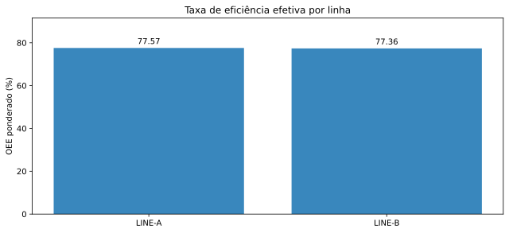

Dataset e resultados são criados por algoritmo com seed documentada; não são dados observados de indústria.
Problema e decisão
Inspecionar perdas de disponibilidade e refugo por linha.
Método verificável
Índice OEE = (tempo ideal × unidades boas) / tempo programado. A agregação é ponderada pelo denominador; não é média ingênua de percentuais.
Métricas calculadas
- records
- 240
- Total planned hours
- 1.920
- OEE weighted %
- 77,46
Visualização

Reprodutibilidade e fontes
python -m pip install -r requirements/case-studies.txt python case_studies/analytics.py python -m unittest discover -s tests -v
Limitações e próxima etapa
Desvios, manutenção planejada e ideal cycle time foram simulados; confirmar taxonomia de paradas antes de uso real.
Para uso empresarial, validar a procedência, granularidade, leakage, custo de erro, premissas do KPI e a generalização dos modelos.